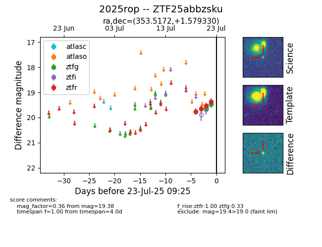

Target ZTF25abbzsku at 2025-07-23 12:37, see:
FINK: fink-portal.org/ZTF25abbzsku
Lasair: lasair-ztf.lsst.ac.uk/objects/ZTF25abbzsku
ALeRCE: alerce.online/object/ZTF25abbzsku
TNS: wis-tns.org/object/2025rop
YSE: ziggy.ucolick.org/yse/transient_detail/2025rop
alt names
ZTF25abbzsku (ztf,fink)
2025rop (tns,yse)
coordinates:
equatorial (ra, dec) = (353.5172,+1.57933)
galactic (l, b) = (86.8669,-55.77835)
photometry
last ztfg=19.46, ztfr=19.38
4 ztfg, 4 ztfr detections
